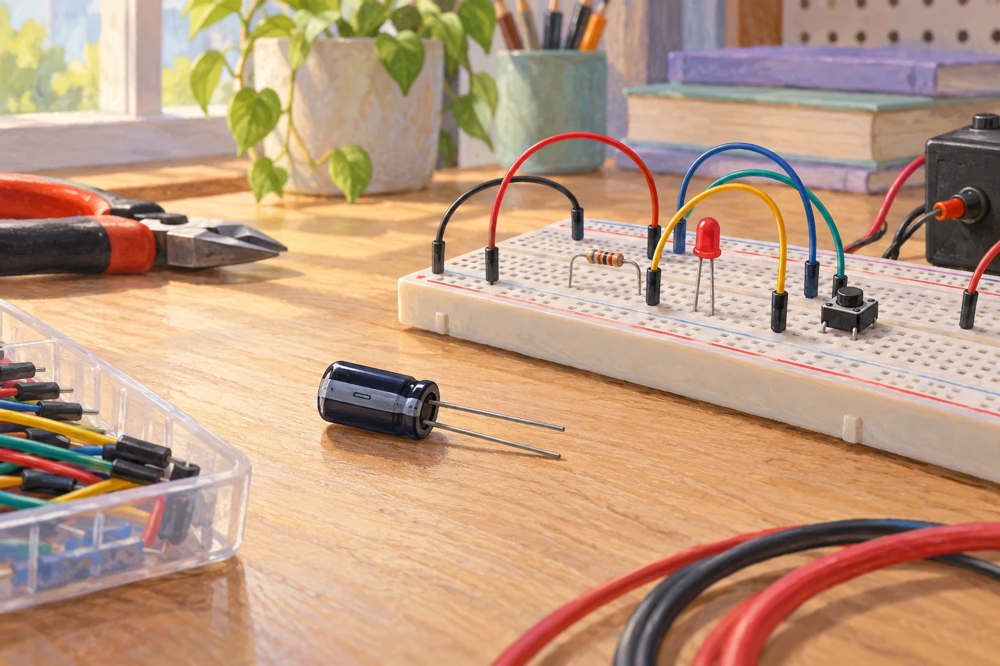

Zusatzaufgaben · Physik
Fermi-Aufgaben · Ladungen Felder und Induktion
Wählt eine Aufgabe und entwickelt euren eigenen Lösungsweg.

Aufgabe 27 · Q1 LK
Elektronen auf einer Kondensatorplatte
Ein Kondensator aus einem Schulversuch hat eine Kapazität von etwa 1000 µF und wird mit 5 V geladen. Wie viele zusätzliche Elektronen befinden sich dadurch ungefähr auf seiner negativ geladenen Platte?